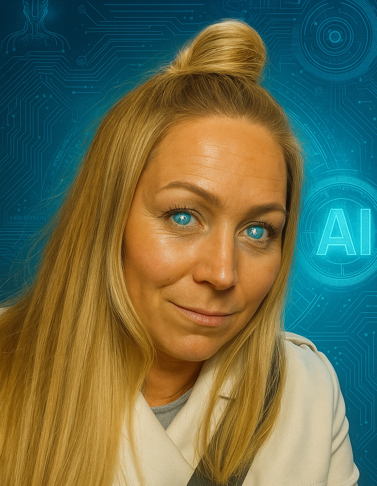

Systemteamet
Systemutveckling och digitalisering i välfärden
Vi förvaltar merparten av de större systemen inom Sektor Välfärd, men vårt främsta uppdrag är att driva digitalisering och modernisering – att utveckla systemen så att de blir mer användarvänliga, effektiva och anpassade till dagens behov. Viu brinner för att digitalisera och effektivisera – Grundprincipen är enkel: när ett system finns på plats ska vi arbeta i det fullt ut, inte vid sidan av det.
Med flera års studier inom programmering, databaser, mjukvaruutveckling, webbutveckling, maskininlärning och en spetskompetens i AI har jag byggt upp en bred systemförståelse i hur digitala verktyg hänger ihop.
Teknik som frigör tid och höjer kvalitet
Digitalisering handlar inte om teknik för teknikens skull. Den handlar om att frigöra tid, minska fel och att ge omsorgspersonalen rätt förutsättningar.
Nära verksamheten
Jag arbetar alltid nära enheterna. Jag lyssnar in behoven, testar lösningar i praktiken och justerar där det behövs. Det handlar inte om att införa teknik för teknikens skull – utan om att skapa något som verkligen fungerar i vardagen.
Systemet först – alltid
I mitt arbete utgår jag alltid från det vi redan har. Det är ineffektivt och riskfyllt att arbeta runt systemen. Istället ser jag till att verksamheten kan arbeta fullt ut i det befintliga systemet – med rätt struktur, rätt behörighet och rätt funktionalitet. Resultatet är ett system som stöttar personalen – inte tvärtom. Tekniken ska vara ett stöd – inte ett hinder.
